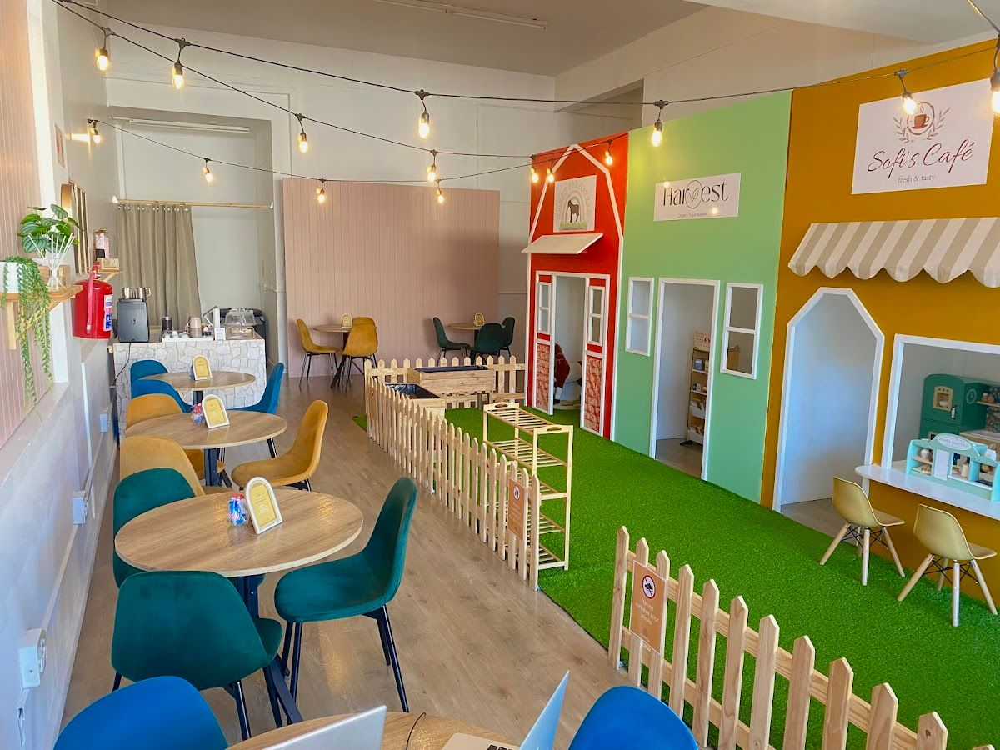
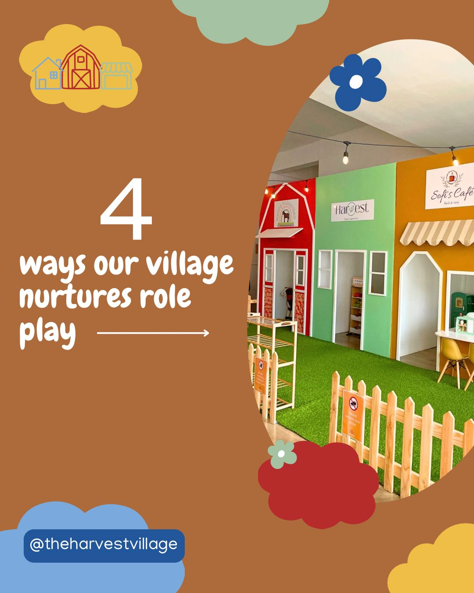
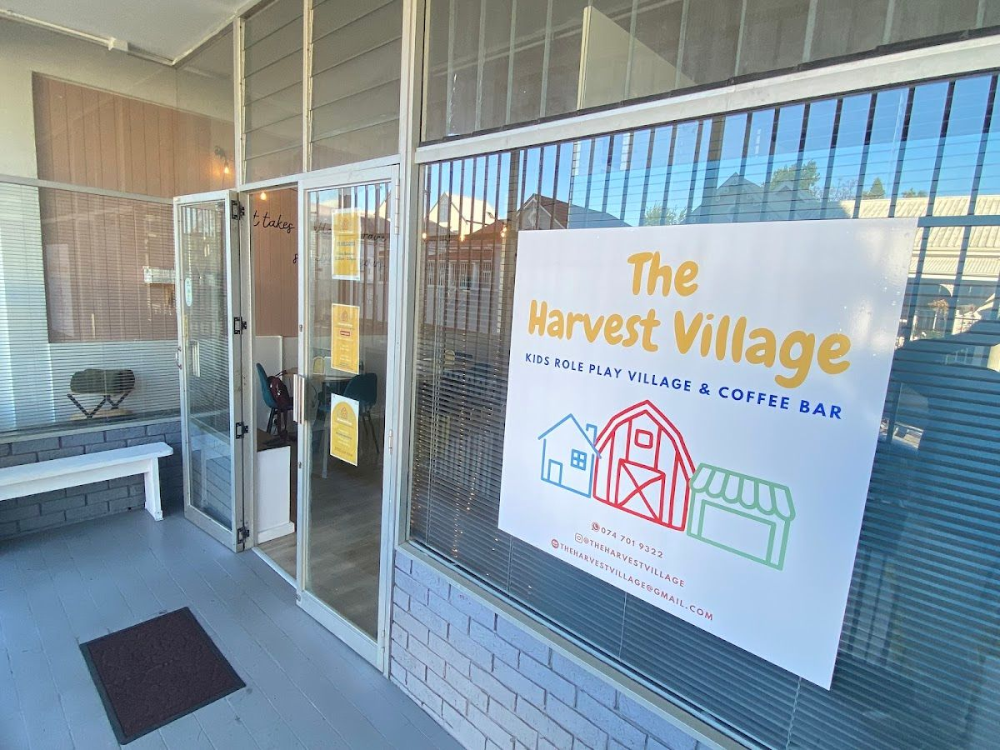
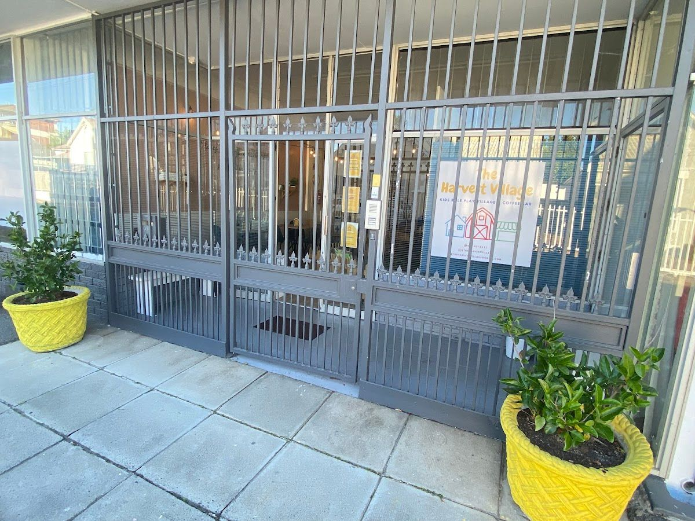

Nestled in the heart of Kenilworth, Cape Town, The Harvest Village is a cozy blend of a kids' role play village and a coffee bar. We aim to provide a safe, clean, and engaging environment where children can explore their creativity while parents unwind with a cup of freshly brewed coffee.
Our story began with the vision to create a community-centered space that fosters imaginative play for children and offers a relaxing oasis for parents. Every corner of The Harvest Village is designed with intention and care, ensuring both children and adults feel welcomed and valued.
At The Harvest Village, we prioritize safety, cleanliness, and an enriching experience. We are committed to supporting family-owned ventures and delivering quality service that reflects our dedication to our community.
Explore our offerings designed to create memorable experiences for both children and parents.
Our role play village is thoughtfully designed to stimulate children's imagination and creativity. From mini kitchens to workshop areas, kids can engage in various scenarios that promote learning and fun.
Relax in our comfortable coffee bar, offering a selection of freshly brewed coffees, teas, and delicious snacks. It's the perfect spot to unwind while your children play.
Here is what our clients say about us.
"We took our 2-year-old to the Harvest Village for the first time and will definitely be back! He's a busy little boy so finding something that grabs his attention is tricky, but he played happily for close to two hours while we had a coffee and some snacks. It's so beautifully designed and very intentional in that you can see your kids at all times, there's a calm atmosphere (in large part thanks to the gentle music playing) and they really get to immerse themselves in imaginative play. It was so nice bringing him somewhere that was safe, clean, geared towards such an important part of development and the family running it were so friendly! I also love supporting a real family-owned venture. You can tell that they put a lot of love and consideration into everything. I immediately WhatsApped the local parents group about it, and will definitely be back with our toddler!"— Roxanne Joseph, ⭐⭐⭐⭐⭐
"I have a friend with a 3 year old daughter, we wanted to take her to a place where she could play and we could chat. A quick google search landed us at The Harvest Village, which I can highly recommend. The first thing which struck me was the minute you walk in, it is evident that everything is meticulously clean, which is obviously very important in an environment for young children. My friends daughter is usually shy but she went straight in to play! The lady working the desk (Sunday 26 October) was really sweet and lovely with the children. I would definitely come back here! Really nice that it is open on a Sunday as well."— Mel du Toit, ⭐⭐⭐⭐⭐
"Very nice place. Kids loved it and had a great time. Ask questions on how it works inside. You pay for your time being there, so after 1 hour it can become pricey."— Gavin Knoesen, ⭐⭐⭐⭐
"I stumbled upon The Harvest Village after my plans to take my daughter on a playdate at the park fell through due to rain, and I’m so glad we did! For just R100 per hour, my daughter and her friend got to immerse themselves in imaginative role-play, and they had an absolute blast. The setup is thoughtfully designed, with engaging play areas that allow kids to explore, create, and learn while having fun. The environment felt safe, clean, and well-organized, making it easy for parents to relax while the little ones enjoyed themselves. Watching my daughter light up with excitement as she played was priceless! The Harvest Village is a hidden gem for anyone looking for an indoor play space that encourages creativity and fun. We’ll definitely be back for more playdates! ⭐️⭐️⭐️⭐️⭐️ Highly recommended!"— Nabeelah Goosen, ⭐⭐⭐⭐⭐
"Such a lovely space for younger toddlers, very calm, all one level. The tables are positioned around the play area with good visibility so even if your toddlers are young you can have a moment sat down with your coffee while they are safely exploring. There’s parking right outside and there’s a dedicated baby change, it’s just perfect for 1-3 year olds when you don’t want them trampled in chaotic soft plays."— Ann-Louise Lowson, ⭐⭐⭐⭐⭐




We'd love to hear from you — reach out to us anytime.